规定初始像素覆盖已通过独立数据验收，完整12步与物理安全未通过。Prescribed initial pixel coverage passes the independent DATA audit; full12-step and physical acceptance remain incomplete. Original1280×720; no edits/crop. Every image below is INITIAL, not micro1/final.
{"seed": 1, "proposal_id": 2066, "global_id": 16402, "family": 2}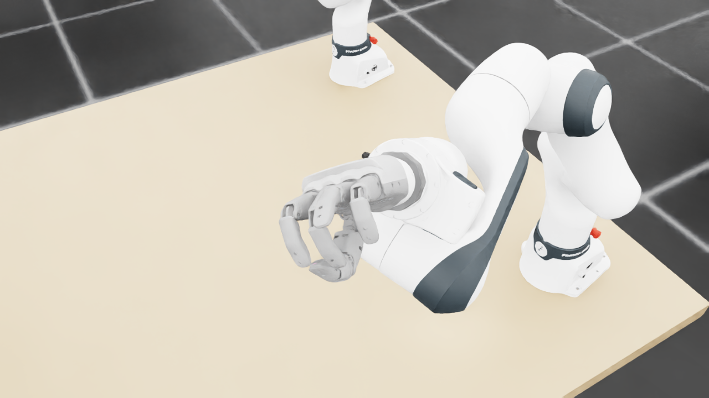
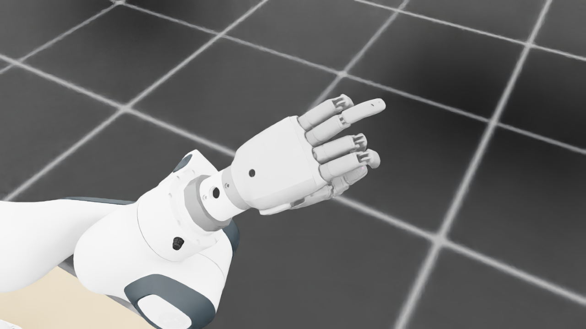
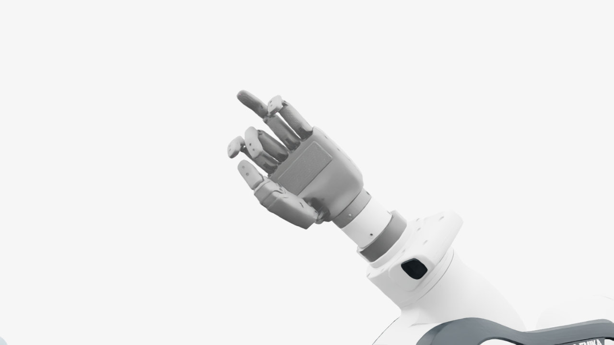
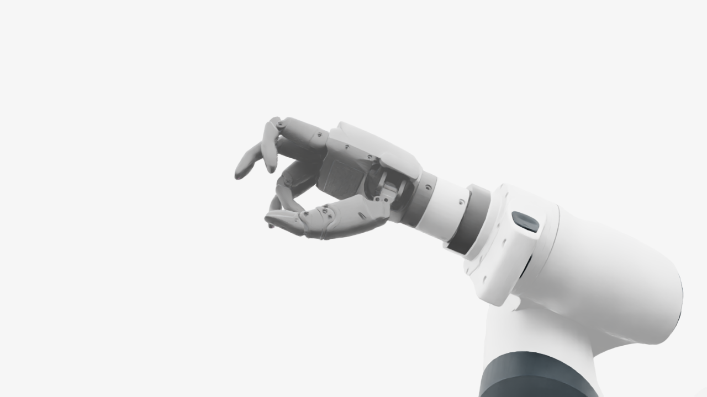
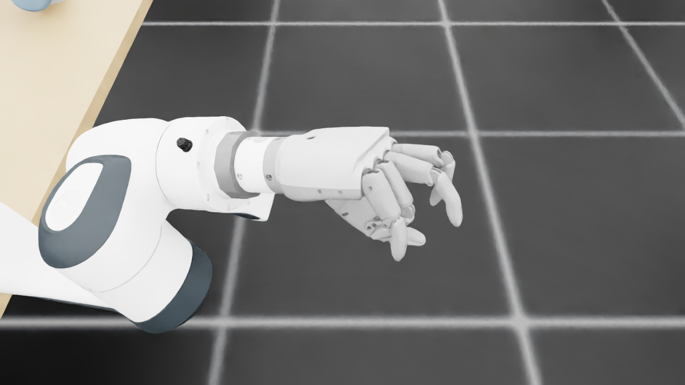
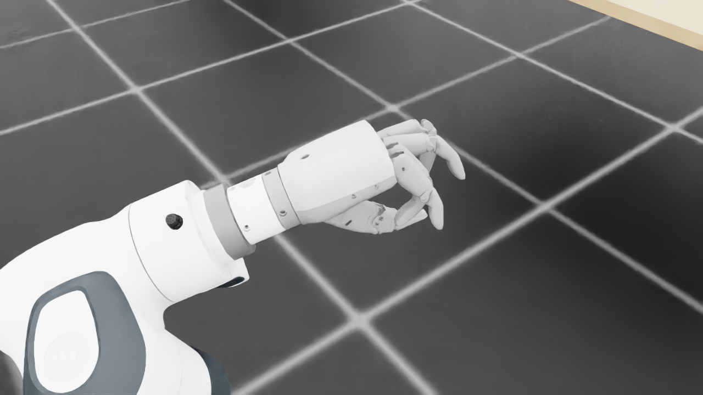
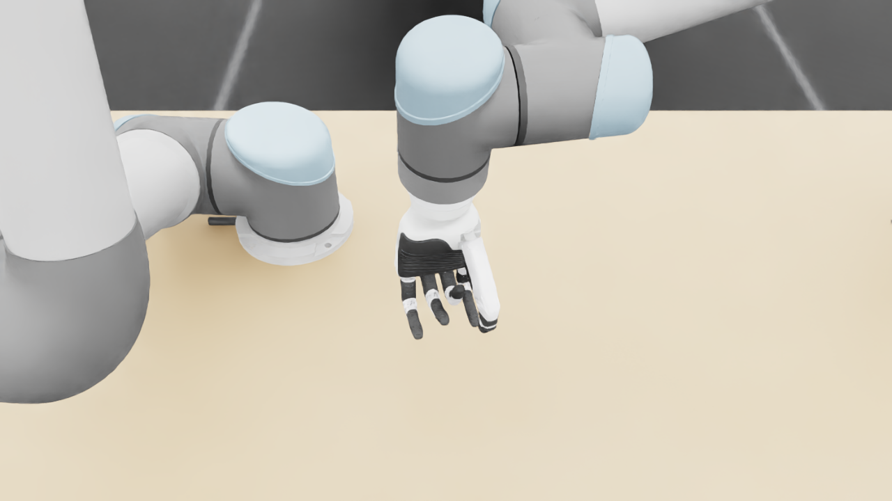
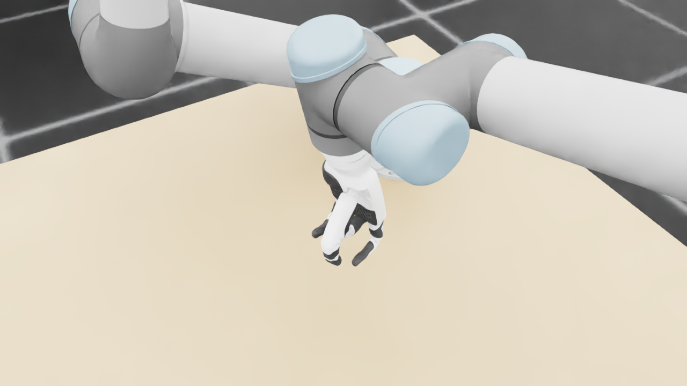
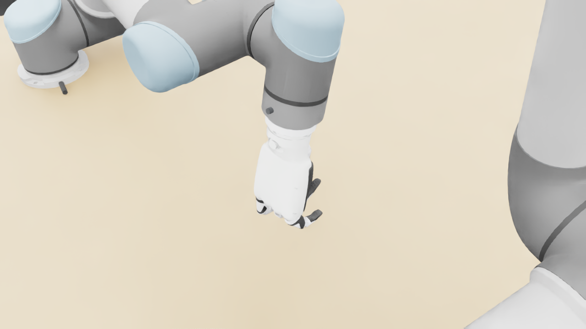
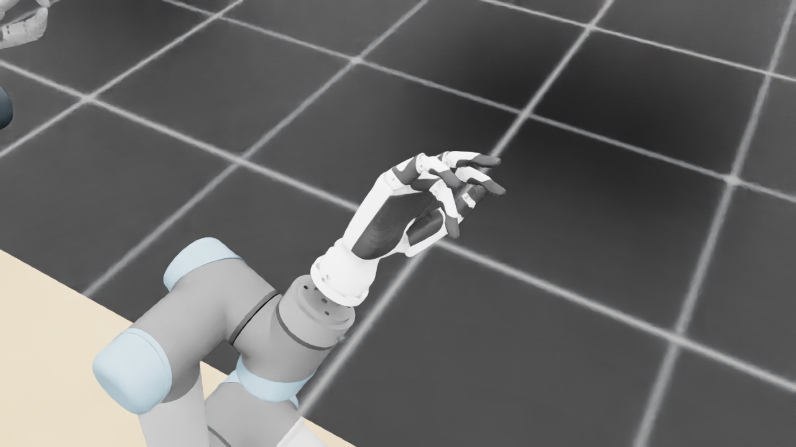
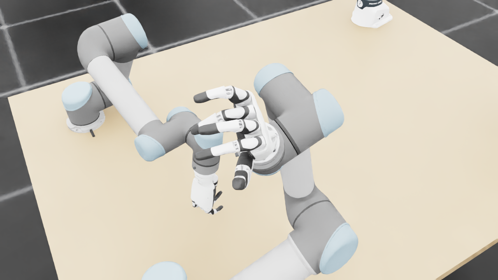
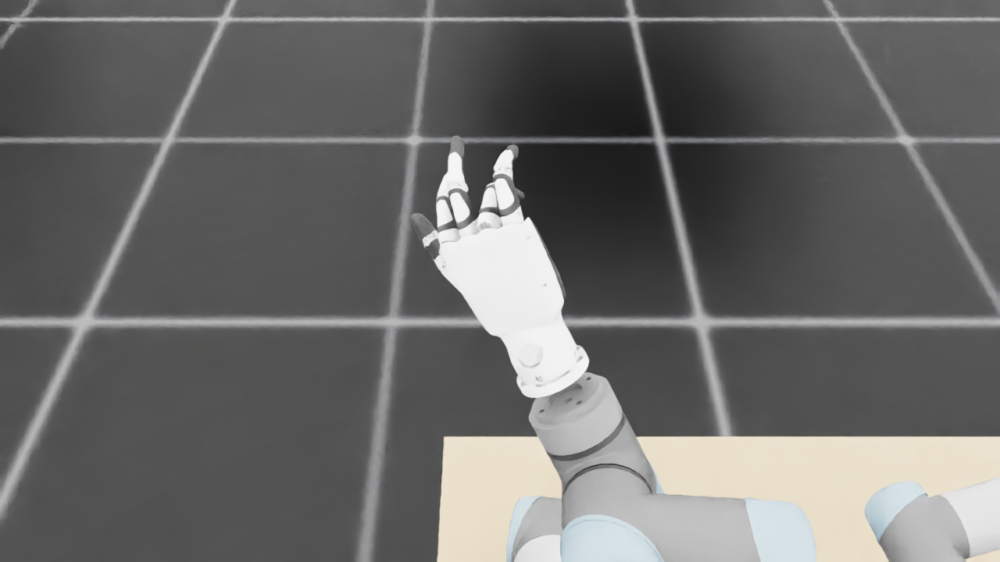
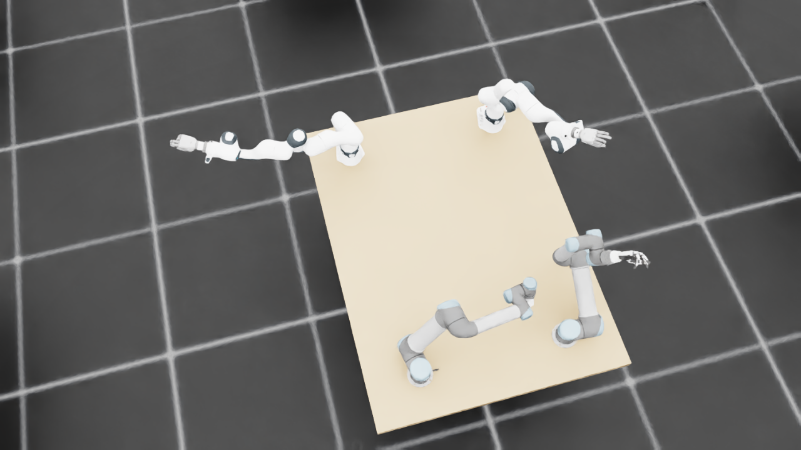
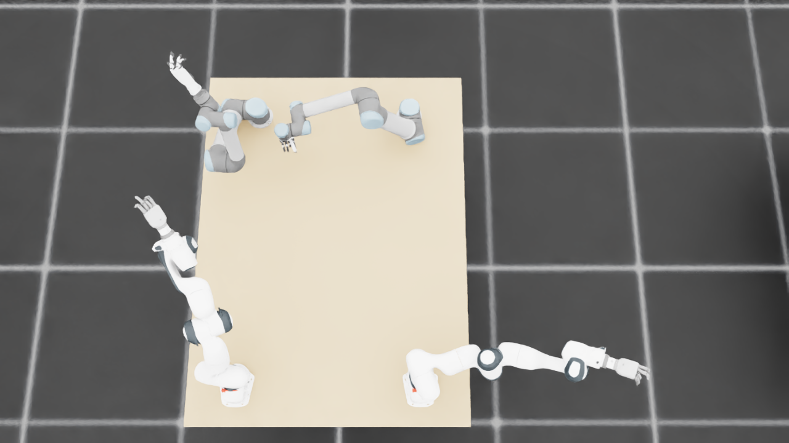
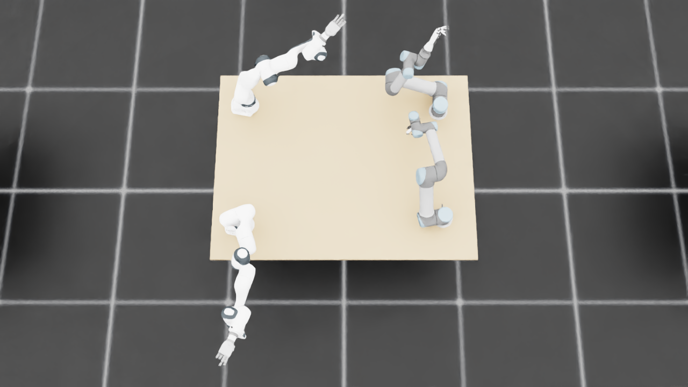
{
"qualified": true,
"arms": {
"F_L": {
"qualified": true,
"palm_visual_peak_pixels": 31822,
"finger_family_peak_pixels": {
"thumb": 9341,
"index": 5083,
"middle": 4357,
"ring": 6469,
"little": 4858
},
"per_native_body_peak_pixels": {
"/World/envs/env_13/F_L/f2_hand/left_hand_base": 37049,
"/World/envs/env_13/F_L/f2_hand/left_index_1": 3526,
"/World/envs/env_13/F_L/f2_hand/left_middle_1": 3420,
"/World/envs/env_13/F_L/f2_hand/left_pinky_1": 3352,
"/World/envs/env_13/F_L/f2_hand/left_ring_1": 3313,
"/World/envs/env_13/F_L/f2_hand/left_thumb_1": 482,
"/World/envs/env_13/F_L/f2_hand/left_index_2": 3413,
"/World/envs/env_13/F_L/f2_hand/left_middle_2": 2849,
"/World/envs/env_13/F_L/f2_hand/left_pinky_2": 3150,
"/World/envs/env_13/F_L/f2_hand/left_ring_2": 3156,
"/World/envs/env_13/F_L/f2_hand/left_thumb_2": 4853,
"/World/envs/env_13/F_L/f2_hand/left_thumb_3": 2431,
"/World/envs/env_13/F_L/f2_hand/left_thumb_4": 2010
},
"native_body_visibility_gaps": [],
"all_native_hand_bodies_observed": true,
"full_mesh_coverage_certified": false,
"all_recorded_attempt_peak": {
"qualified": false,
"palm_visual_peak_pixels": 31822,
"finger_family_peak_pixels": {
"thumb": 11173,
"index": 5922,
"middle": 4782,
"ring": 6469,
"little": 6205
},
"per_native_body_peak_pixels": {
"/World/envs/env_13/F_L/f2_hand/left_hand_base": 37049,
"/World/envs/env_13/F_L/f2_hand/left_index_1": 3545,
"/World/envs/env_13/F_L/f2_hand/left_middle_1": 3420,
"/World/envs/env_13/F_L/f2_hand/left_pinky_1": 3919,
"/World/envs/env_13/F_L/f2_hand/left_ring_1": 3313,
"/World/envs/env_13/F_L/f2_hand/left_thumb_1": 1101,
"/World/envs/env_13/F_L/f2_hand/left_index_2": 3413,
"/World/envs/env_13/F_L/f2_hand/left_middle_2": 2849,
"/World/envs/env_13/F_L/f2_hand/left_pinky_2": 3150,
"/World/envs/env_13/F_L/f2_hand/left_ring_2": 3156,
"/World/envs/env_13/F_L/f2_hand/left_thumb_2": 6056,
"/World/envs/env_13/F_L/f2_hand/left_thumb_3": 2629,
"/World/envs/env_13/F_L/f2_hand/left_thumb_4": 2010
},
"native_body_visibility_gaps": [],
"all_native_hand_bodies_observed": true,
"full_mesh_coverage_certified": false,
"qualification": false
},
"attempts": 9,
"decoded": 9
},
"F_R": {
"qualified": true,
"palm_visual_peak_pixels": 30076,
"finger_family_peak_pixels": {
"thumb": 12577,
"index": 6078,
"middle": 6578,
"ring": 4125,
"little": 6980
},
"per_native_body_peak_pixels": {
"/World/envs/env_13/F_R/f2_hand/right_hand_base": 38109,
"/World/envs/env_13/F_R/f2_hand/right_index_1": 3585,
"/World/envs/env_13/F_R/f2_hand/right_middle_1": 3339,
"/World/envs/env_13/F_R/f2_hand/right_pinky_1": 4781,
"/World/envs/env_13/F_R/f2_hand/right_ring_1": 2822,
"/World/envs/env_13/F_R/f2_hand/right_thumb_1": 831,
"/World/envs/env_13/F_R/f2_hand/right_index_2": 2493,
"/World/envs/env_13/F_R/f2_hand/right_middle_2": 3239,
"/World/envs/env_13/F_R/f2_hand/right_pinky_2": 2199,
"/World/envs/env_13/F_R/f2_hand/right_ring_2": 1692,
"/World/envs/env_13/F_R/f2_hand/right_thumb_2": 6744,
"/World/envs/env_13/F_R/f2_hand/right_thumb_3": 2556,
"/World/envs/env_13/F_R/f2_hand/right_thumb_4": 2446
},
"native_body_visibility_gaps": [],
"all_native_hand_bodies_observed": true,
"full_mesh_coverage_certified": false,
"all_recorded_attempt_peak": {
"qualified": false,
"palm_visual_peak_pixels": 32204,
"finger_family_peak_pixels": {
"thumb": 12577,
"index": 6997,
"middle": 6578,
"ring": 4125,
"little": 6980
},
"per_native_body_peak_pixels": {
"/World/envs/env_13/F_R/f2_hand/right_hand_base": 40341,
"/World/envs/env_13/F_R/f2_hand/right_index_1": 4297,
"/World/envs/env_13/F_R/f2_hand/right_middle_1": 3339,
"/World/envs/env_13/F_R/f2_hand/right_pinky_1": 4781,
"/World/envs/env_13/F_R/f2_hand/right_ring_1": 2822,
"/World/envs/env_13/F_R/f2_hand/right_thumb_1": 1184,
"/World/envs/env_13/F_R/f2_hand/right_index_2": 2764,
"/World/envs/env_13/F_R/f2_hand/right_middle_2": 3239,
"/World/envs/env_13/F_R/f2_hand/right_pinky_2": 2199,
"/World/envs/env_13/F_R/f2_hand/right_ring_2": 2296,
"/World/envs/env_13/F_R/f2_hand/right_thumb_2": 6744,
"/World/envs/env_13/F_R/f2_hand/right_thumb_3": 2556,
"/World/envs/env_13/F_R/f2_hand/right_thumb_4": 2446
},
"native_body_visibility_gaps": [],
"all_native_hand_bodies_observed": true,
"full_mesh_coverage_certified": false,
"qualification": false
},
"attempts": 7,
"decoded": 7
},
"U_L": {
"qualified": true,
"palm_visual_peak_pixels": 4366,
"finger_family_peak_pixels": {
"thumb": 5290,
"index": 1749,
"middle": 1164,
"ring": 1477,
"little": 1656
},
"per_native_body_peak_pixels": {
"/World/envs/env_13/U_L/wrist_3_link": 27864,
"/World/envs/env_13/U_L/left_index_1": 730,
"/World/envs/env_13/U_L/left_little_1": 817,
"/World/envs/env_13/U_L/left_middle_1": 697,
"/World/envs/env_13/U_L/left_ring_1": 715,
"/World/envs/env_13/U_L/left_thumb_1": 357,
"/World/envs/env_13/U_L/left_index_2": 1019,
"/World/envs/env_13/U_L/left_little_2": 839,
"/World/envs/env_13/U_L/left_middle_2": 555,
"/World/envs/env_13/U_L/left_ring_2": 762,
"/World/envs/env_13/U_L/left_thumb_2": 3689,
"/World/envs/env_13/U_L/left_thumb_3": 993,
"/World/envs/env_13/U_L/left_thumb_4": 251
},
"native_body_visibility_gaps": [],
"all_native_hand_bodies_observed": true,
"full_mesh_coverage_certified": false,
"all_recorded_attempt_peak": {
"qualified": false,
"palm_visual_peak_pixels": 9998,
"finger_family_peak_pixels": {
"thumb": 7316,
"index": 3307,
"middle": 2188,
"ring": 2503,
"little": 3190
},
"per_native_body_peak_pixels": {
"/World/envs/env_13/U_L/wrist_3_link": 30744,
"/World/envs/env_13/U_L/left_index_1": 1981,
"/World/envs/env_13/U_L/left_little_1": 2007,
"/World/envs/env_13/U_L/left_middle_1": 784,
"/World/envs/env_13/U_L/left_ring_1": 1176,
"/World/envs/env_13/U_L/left_thumb_1": 453,
"/World/envs/env_13/U_L/left_index_2": 1326,
"/World/envs/env_13/U_L/left_little_2": 1183,
"/World/envs/env_13/U_L/left_middle_2": 1404,
"/World/envs/env_13/U_L/left_ring_2": 1395,
"/World/envs/env_13/U_L/left_thumb_2": 4201,
"/World/envs/env_13/U_L/left_thumb_3": 2105,
"/World/envs/env_13/U_L/left_thumb_4": 972
},
"native_body_visibility_gaps": [],
"all_native_hand_bodies_observed": true,
"full_mesh_coverage_certified": false,
"qualification": false
},
"attempts": 10,
"decoded": 10
},
"U_R": {
"qualified": true,
"palm_visual_peak_pixels": 7059,
"finger_family_peak_pixels": {
"thumb": 4996,
"index": 5273,
"middle": 4815,
"ring": 4318,
"little": 4751
},
"per_native_body_peak_pixels": {
"/World/envs/env_13/U_R/wrist_3_link": 32428,
"/World/envs/env_13/U_R/right_index_1": 2446,
"/World/envs/env_13/U_R/right_little_1": 2253,
"/World/envs/env_13/U_R/right_middle_1": 1855,
"/World/envs/env_13/U_R/right_ring_1": 2848,
"/World/envs/env_13/U_R/right_thumb_1": 293,
"/World/envs/env_13/U_R/right_index_2": 2827,
"/World/envs/env_13/U_R/right_little_2": 2498,
"/World/envs/env_13/U_R/right_middle_2": 2960,
"/World/envs/env_13/U_R/right_ring_2": 1900,
"/World/envs/env_13/U_R/right_thumb_2": 3156,
"/World/envs/env_13/U_R/right_thumb_3": 956,
"/World/envs/env_13/U_R/right_thumb_4": 978
},
"native_body_visibility_gaps": [],
"all_native_hand_bodies_observed": true,
"full_mesh_coverage_certified": false,
"all_recorded_attempt_peak": {
"qualified": false,
"palm_visual_peak_pixels": 10492,
"finger_family_peak_pixels": {
"thumb": 6813,
"index": 5273,
"middle": 4815,
"ring": 4318,
"little": 4751
},
"per_native_body_peak_pixels": {
"/World/envs/env_13/U_R/wrist_3_link": 33883,
"/World/envs/env_13/U_R/right_index_1": 2446,
"/World/envs/env_13/U_R/right_little_1": 2253,
"/World/envs/env_13/U_R/right_middle_1": 1855,
"/World/envs/env_13/U_R/right_ring_1": 2848,
"/World/envs/env_13/U_R/right_thumb_1": 361,
"/World/envs/env_13/U_R/right_index_2": 2827,
"/World/envs/env_13/U_R/right_little_2": 2498,
"/World/envs/env_13/U_R/right_middle_2": 2960,
"/World/envs/env_13/U_R/right_ring_2": 1900,
"/World/envs/env_13/U_R/right_thumb_2": 4133,
"/World/envs/env_13/U_R/right_thumb_3": 1678,
"/World/envs/env_13/U_R/right_thumb_4": 978
},
"native_body_visibility_gaps": [],
"all_native_hand_bodies_observed": true,
"full_mesh_coverage_certified": false,
"qualification": false
},
"attempts": 9,
"decoded": 9
}
},
"wide": {
"qualified": true,
"per_native_object_peak_pixels": {
"/World/envs/env_13/F_L/fr3_link0": 1760,
"/World/envs/env_13/F_L/fr3_link1": 1496,
"/World/envs/env_13/F_L/fr3_link2": 1495,
"/World/envs/env_13/F_L/fr3_link3": 3023,
"/World/envs/env_13/F_L/fr3_link4": 3065,
"/World/envs/env_13/F_L/fr3_link5": 2190,
"/World/envs/env_13/F_L/fr3_link6": 1741,
"/World/envs/env_13/F_L/fr3_link7": 933,
"/World/envs/env_13/F_L/fr3_link8": 165,
"/World/envs/env_13/F_L/f2_hand/left_hand_base": 1200,
"/World/envs/env_13/F_L/f2_hand/left_index_1": 98,
"/World/envs/env_13/F_L/f2_hand/left_middle_1": 91,
"/World/envs/env_13/F_L/f2_hand/left_pinky_1": 104,
"/World/envs/env_13/F_L/f2_hand/left_ring_1": 96,
"/World/envs/env_13/F_L/f2_hand/left_thumb_1": 0,
"/World/envs/env_13/F_L/f2_hand/left_index_2": 44,
"/World/envs/env_13/F_L/f2_hand/left_middle_2": 24,
"/World/envs/env_13/F_L/f2_hand/left_pinky_2": 41,
"/World/envs/env_13/F_L/f2_hand/left_ring_2": 85,
"/World/envs/env_13/F_L/f2_hand/left_thumb_2": 39,
"/World/envs/env_13/F_L/f2_hand/left_thumb_3": 23,
"/World/envs/env_13/F_L/f2_hand/left_thumb_4": 16,
"/World/envs/env_13/F_R/fr3_link0": 1181,
"/World/envs/env_13/F_R/fr3_link1": 1544,
"/World/envs/env_13/F_R/fr3_link2": 3076,
"/World/envs/env_13/F_R/fr3_link3": 1444,
"/World/envs/env_13/F_R/fr3_link4": 2631,
"/World/envs/env_13/F_R/fr3_link5": 2205,
"/World/envs/env_13/F_R/fr3_link6": 2516,
"/World/envs/env_13/F_R/fr3_link7": 688,
"/World/envs/env_13/F_R/fr3_link8": 150,
"/World/envs/env_13/F_R/f2_hand/right_hand_base": 1238,
"/World/envs/env_13/F_R/f2_hand/right_index_1": 95,
"/World/envs/env_13/F_R/f2_hand/right_middle_1": 90,
"/World/envs/env_13/F_R/f2_hand/right_pinky_1": 68,
"/World/envs/env_13/F_R/f2_hand/right_ring_1": 55,
"/World/envs/env_13/F_R/f2_hand/right_thumb_1": 1,
"/World/envs/env_13/F_R/f2_hand/right_index_2": 33,
"/World/envs/env_13/F_R/f2_hand/right_middle_2": 51,
"/World/envs/env_13/F_R/f2_hand/right_pinky_2": 24,
"/World/envs/env_13/F_R/f2_hand/right_ring_2": 7,
"/World/envs/env_13/F_R/f2_hand/right_thumb_2": 31,
"/World/envs/env_13/F_R/f2_hand/right_thumb_3": 13,
"/World/envs/env_13/F_R/f2_hand/right_thumb_4": 23,
"/World/envs/env_13/U_L/base_link": 373,
"/World/envs/env_13/U_L/shoulder_link": 1353,
"/World/envs/env_13/U_L/upper_arm_link": 4259,
"/World/envs/env_13/U_L/forearm_link": 3482,
"/World/envs/env_13/U_L/wrist_1_link": 876,
"/World/envs/env_13/U_L/wrist_2_link": 630,
"/World/envs/env_13/U_L/wrist_3_link": 174,
"/World/envs/env_13/U_L/left_index_1": 5,
"/World/envs/env_13/U_L/left_little_1": 22,
"/World/envs/env_13/U_L/left_middle_1": 13,
"/World/envs/env_13/U_L/left_ring_1": 25,
"/World/envs/env_13/U_L/left_thumb_1": 8,
"/World/envs/env_13/U_L/left_index_2": 16,
"/World/envs/env_13/U_L/left_little_2": 32,
"/World/envs/env_13/U_L/left_middle_2": 16,
"/World/envs/env_13/U_L/left_ring_2": 34,
"/World/envs/env_13/U_L/left_thumb_2": 97,
"/World/envs/env_13/U_L/left_thumb_3": 14,
"/World/envs/env_13/U_L/left_thumb_4": 4,
"/World/envs/env_13/U_R/base_link": 358,
"/World/envs/env_13/U_R/shoulder_link": 1493,
"/World/envs/env_13/U_R/upper_arm_link": 4145,
"/World/envs/env_13/U_R/forearm_link": 2926,
"/World/envs/env_13/U_R/wrist_1_link": 947,
"/World/envs/env_13/U_R/wrist_2_link": 598,
"/World/envs/env_13/U_R/wrist_3_link": 1413,
"/World/envs/env_13/U_R/right_index_1": 49,
"/World/envs/env_13/U_R/right_little_1": 100,
"/World/envs/env_13/U_R/right_middle_1": 85,
"/World/envs/env_13/U_R/right_ring_1": 38,
"/World/envs/env_13/U_R/right_thumb_1": 6,
"/World/envs/env_13/U_R/right_index_2": 41,
"/World/envs/env_13/U_R/right_little_2": 57,
"/World/envs/env_13/U_R/right_middle_2": 74,
"/World/envs/env_13/U_R/right_ring_2": 45,
"/World/envs/env_13/U_R/right_thumb_2": 85,
"/World/envs/env_13/U_R/right_thumb_3": 49,
"/World/envs/env_13/U_R/right_thumb_4": 22,
"/World/envs/env_13/TableF": 119416,
"/World/envs/env_13/TableU": 92489
},
"arm_peak_pixels": {
"F_L": 17646,
"F_R": 17095,
"U_L": 10813,
"U_R": 10843
},
"table_peak_pixels": {
"TableF": 119416,
"TableU": 92489
},
"critical_body_peak_pixels": {
"/World/envs/env_13/U_L/forearm_link": 3482,
"/World/envs/env_13/U_L/wrist_2_link": 630,
"/World/envs/env_13/U_R/forearm_link": 2926,
"/World/envs/env_13/U_R/wrist_2_link": 598
}
},
"raw_attempt_count": 45,
"PNG_count": 45,
"angle_records": 45,
"max_actual_angle_identity_error_deg": 0.0,
"held_snapshot_checks": 2180,
"universal_visibility_impossible": false,
"full_mesh_coverage_certified": false
}